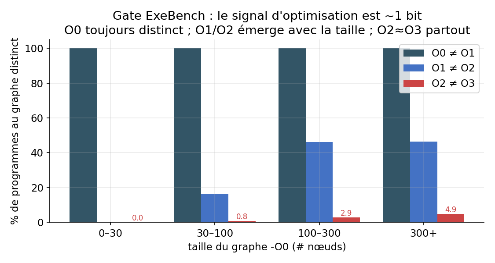
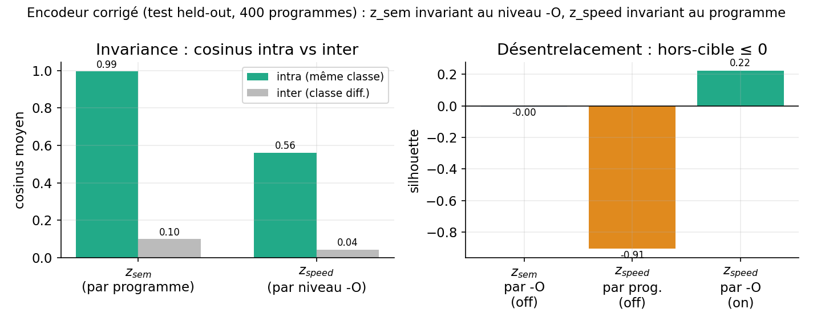
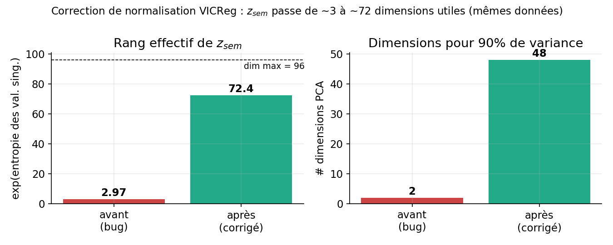

Un encodeur auto-supervisé factorisé pour graphes de programmes (IR)
Note technique — 2026-07-01. Destinée à un chercheur, pour discussion et critique. Périmètre : l'encodeur uniquement (pas de décodeur, pas d'optimiseur, pas de produit).
Résumé
On apprend, sans aucun label, un encodeur de programmes $f_\theta$ sur des graphes
ProgramML (représentation GNN-sur-IR LLVM). L'embedding de sortie est factorisé
en deux sous-espaces, $z = [z_{sem} \,\|\, z_{speed}]$, entraînés pour que :
- $z_{sem}$ soit invariant au niveau d'optimisation -O (« ce que fait le code »),
- $z_{speed}$ soit invariant au programme (« le profil d'optimisation »).
Sur un test held-out, la factorisation tient : cosinus intra/inter nets et silhouettes hors-cible $\le 0$ (Fig. 3). Deux résultats méritent discussion : (i) le signal d'optimisation apprenable sur des fonctions isolées est ~1 bit (Fig. 2), et (ii) un bug de normalisation VICReg effondrait la représentation à ~3 dimensions ; corrigé, le rang effectif de $z_{sem}$ passe à ~72/96 à données constantes (Fig. 1). On liste en fin de note les questions ouvertes.
1. Formalisation
Graphe programme. Un programme compilé produit un graphe orienté typé
$G = (V, E, \phi)$ avec nœuds $V$, arêtes typées
$E \subseteq V \times V \times R$, $R = \{\text{control}, \text{data}, \text{call}\}$
(les flux ProgramML), et étiquette de nœud $\phi: V \to \Sigma$ (opcode/texte). La
feature de nœud est l'identifiant de vocabulaire $\mathrm{id}(\phi(v)) \in \{0,\dots,K\}$
(0 = <unk>). On note $E_r = \{(u,v) : (u,v,r)\in E\}$.
Vues. Chaque programme $P$ est compilé aux niveaux
$\ell \in \mathcal{O} = \{\texttt{-O0},\texttt{-O1},\texttt{-O2},\texttt{-O3}\}$, donnant
4 graphes $G_P^\ell$. Le niveau -O ne sert qu'à grouper les vues (positifs), jamais
de cible de classification.
Encodeur. $f_\theta : \mathcal{G} \to \mathbb{R}^{d}$, $d = d_{sem}+d_{speed}$, $f_\theta(G) = [\,z_{sem} \,\|\, z_{speed}\,]$.
2. Modèle ($\texttt{FactoredEncoder}$)
Tronc GNN à $L$ couches, une convolution par relation : $$ h^{(0)}_v = W_{\text{in}}\,\mathrm{emb}(\mathrm{id}(\phi(v))) + \mathrm{PE}(v), \qquad h^{(l+1)} = \mathrm{LN}\!\Big(h^{(l)} + \mathrm{Drop}\big(\sigma\big(\textstyle\sum_{r\in R}\mathrm{GraphConv}_r(h^{(l)}, E_r)\big)\big)\Big), $$ où $\mathrm{PE}(v)$ encode le log-degré entrant/sortant par relation. Lecture (pooling) concaténant moyenne et max : $p = [\,\mathrm{mean}_v\, h^{(L)}_v \;\|\; \max_v\, h^{(L)}_v\,] \in \mathbb{R}^{2H}$. Deux têtes MLP (avec BatchNorm) projettent : $z_{sem} = g_{sem}(p) \in \mathbb{R}^{d_{sem}}$, $z_{speed} = g_{speed}(p) \in \mathbb{R}^{d_{speed}}$. Config : $H{=}256$, $L{=}6$, $d_{sem}{=}96$, $d_{speed}{=}32$, $K{=}8192$, entraîné de zéro.
3. Objectif d'apprentissage (perte factorisée)
Batch de $B$ programmes $\times$ 4 vues, soit $N = 4B$ embeddings, chaque ligne $i$ étiquetée par son programme $\mathrm{prog}(i)$ et sa classe de vitesse $\mathrm{spd}(i) = \pi(\ell_i)$ ($\pi$ = regroupement de niveaux, identité par défaut).
Invariance de groupe (généralisation de l'invariance VICReg à des groupes de taille $>2$), moyennée sur lignes et dimensions : $$ \mathcal{I}(Z, c) \;=\; \frac{1}{N\,d}\sum_{i=1}^{N} \big\lVert z_i - \mu_{c(i)} \big\rVert_2^2, \qquad \mu_k = \frac{1}{|c^{-1}(k)|}\sum_{i:\,c(i)=k} z_i . $$
Termes anti-effondrement VICReg par bloc ($Z\in\mathbb{R}^{N\times d}$, $\mathrm{Cov}$ sur le batch) : $$ \mathcal{V}(Z) = \frac{1}{d}\sum_{j} \max\!\big(0,\,1-\sqrt{\mathrm{Var}(Z_{:,j})+\epsilon}\big), \qquad \mathcal{C}(Z) = \frac{1}{d}\sum_{j\neq k} \mathrm{Cov}(Z)_{jk}^2 . $$
Décorrélation croisée (le terme de désentrelacement) : $$ \mathcal{X}(z_{sem},z_{speed}) = \frac{1}{\max(d_{sem},d_{speed})}\sum_{j,k}\mathrm{Cov}(z_{sem},z_{speed})_{jk}^2 . $$
Perte totale (bloc VICReg $= \alpha\mathcal{I}+\beta\mathcal{V}+\gamma\mathcal{C}$) : $$ \mathcal{L} = \lambda_{sem}\big[\alpha\,\mathcal{I}(z_{sem},\mathrm{prog}) + \beta\,\mathcal{V}(z_{sem}) + \gamma\,\mathcal{C}(z_{sem})\big] + \lambda_{spd}\big[\alpha\,\mathcal{I}(z_{speed},\mathrm{spd}) + \beta\,\mathcal{V}(z_{speed}) + \gamma\,\mathcal{C}(z_{speed})\big] + \lambda_{x}\,\mathcal{X}. $$ avec $(\alpha,\beta,\gamma)=(25,25,1)$, $\lambda_{sem}=\lambda_{spd}=\lambda_x=1$. Pas de masquage, pas de prédicteur, pas de cible EMA (cf. §6, question de nomenclature).
Données & optim. Corpus ExeBench (train_real_compilable), ~8000 fonctions C
compilées O0–O3 (clang-10 embarqué par ProgramML), vocab des text (top-$K$). Split
anti-fuite déterministe par hash. Adam, lr $10^{-3}$ (cosine + warmup), 50 époques,
$B=128$ programmes/batch, un GPU (A100/B200). Éval sur pool held-out disjoint.
4. Résultats
4.1 Gate : combien de bits d'optimisation sont apprenables ?
Avant d'entraîner, on mesure si le graphe change entre niveaux -O (sinon $z_{speed}$
est impossible). Sur 555 fonctions, signature de graphe canonique par (programme, niveau) :
| paire | % graphes distincts |
|---|---|
| O0 ≠ O1 | 100 % |
| O1 ≠ O2 | 24.9 % |
| O2 ≠ O3 | 1.6 % |

Lecture (Fig. 2). O0 est toujours distinct ; O1/O2 n'émerge que sur les fonctions
$\gtrsim 100$ nœuds ; O2≈O3 partout (clang sature sur des fonctions isolées : rien à
inliner, boucles trop courtes pour vectoriser). Le signal d'optimisation apprenable ici
est donc essentiellement 1 bit (O0 vs optimisé). Conséquence assumée : $z_{speed}$
est quasi 1-D (rang effectif 2.6, 1 dim pour 90% de variance).
4.2 Désentrelacement (encodeur corrigé, test 400 programmes)
| grandeur | $z_{sem}$ | $z_{speed}$ |
|---|---|---|
| cos intra-classe | 0.995 (par programme) | 0.561 (par niveau) |
| cos inter-classe | 0.10 | 0.043 |
| écart (gap) | 0.895 | 0.518 |
| silhouette sur-cible | — | +0.222 (par niveau) |
| silhouette hors-cible | −0.004 (par -O) | −0.907 (par programme) |
| rang effectif / $d$ | 72.4 / 96 | 2.64 / 32 |

Lecture (Fig. 3). Les cosinus intra $\gg$ inter dans les deux blocs : $z_{sem}$ regroupe
par programme, $z_{speed}$ par niveau. Surtout, les silhouettes hors-cible sont $\le 0$
(−0.004 pour $z_{sem}$ vs -O ; −0.91 pour $z_{speed}$ vs programme) : chaque bloc ignore
le facteur de l'autre. C'est le désentrelacement recherché. Projections PCA 2-D :
figures/pca_highrank.png ($z_{sem}$ diffus car haut-rang ; $z_{speed}$ = axe O0-vs-optimisé).
4.3 Un bug de normalisation VICReg (résultat de méthode)
L'invariance codée sommait sur les dimensions au lieu de moyenner, cachant un facteur $d$ : $\alpha_{\text{eff}} = 25\,d \approx 2400 \gg \beta=25$. L'attraction écrasait alors les termes de variance/covariance (seuls créateurs de rang), et la représentation s'effondrait à ~3 dimensions. Correction $\text{sum}\to\text{mean}$ (et $\mathcal{C}$ normalisée par $d$ et non $d(d-1)$) — à données et coefficients identiques :

Rang effectif de $z_{sem}$ : 2.97 → 72.4 (Fig. 1), dims pour 90% de variance : 2 → 48. Ajouter des données (3000→8000 programmes) ne changeait rien au rang — c'était bien l'objectif, pas la donnée. (Effet de bord : la variance restaurée force $z_{speed}$ à s'étaler ; son écart cosinus tombe de 0.92 à 0.52 — voir §6.)
5. Reproductibilité
Code + checkpoint (checkpoints/encoder.pt + vocab.json), 24 tests unitaires (dont des
garde-fous de normalisation). Métriques : rang effectif
$\mathrm{erank}(Z)=\exp\!\big(H(\sigma/\lVert\sigma\rVert_1)\big)$ ($\sigma$ = valeurs
singulières de $Z$ centré), cosinus intra/inter, silhouette, variance PCA expliquée.
Détails : docs/results_gate_exebench.md, results_disentangle.md, loss_review.md.
6. Limites & questions ouvertes (pour discussion)
- Invariance partiellement tautologique. $\cos_{\text{intra}}(z_{sem})=0.995$ est en partie « gratuit » : pour ~75–98 % des programmes, les graphes O1/O2/O3 sont identiques (§4.1), donc 3 des 4 vues sont le même input. L'invariance réellement apprise est O0↔optimisé. Faut-il ne mesurer les métriques que sur les paires de vues à graphe distinct pour isoler la sémantique apprise du « gratuit » ?
- $z_{speed}$ ~1-bit vs tête 32-D + VICReg. Le terme de variance force l'étalement sur des dimensions sans signal d'optimisation (d'où la chute de l'écart 0.92→0.52 après correction). Quel est le bon compromis rang ↔ compacité de cluster ? Réduire $d_{speed}$ et/ou fusionner {O2,O3} ($\pi=(0,1,1,1)$) est-il plus sain que de laisser la variance « inventer » du signal ?
- Est-ce du JEPA ? Pas de masquage, pas de prédicteur latent, pas de cible EMA : c'est un apprentissage de représentation désentrelacée par invariance multi-vues (VICReg) sur graphes IR. La nomenclature « JEPA » est-elle défendable, ou trompeuse ?
- Sensibilité de VICReg au ratio invariance/régularisation. Le bug révèle une extrême sensibilité au rapport $\alpha/(\beta,\gamma)$. Y a-t-il une paramétrisation invariante à la dimension par construction (normaliser $\mathcal{I}$ par $d$, ou objectif type Barlow-Twins) qui évite ce piège ?
- Métriques de désentrelacement. Cosinus/silhouette/rang suffisent-ils, ou faut-il des mesures dédiées (MIG, DCI, SAP) — sachant que nos « facteurs » (programme, niveau) sont très déséquilibrés (1 bit vs des milliers de programmes) ?
- Utilité downstream. Le désentrelacement n'a de valeur que s'il aide une tâche en aval (transfert, sonde d'optimisation, guidage d'une réécriture). Non encore testé — quelle serait l'expérience minimale la plus convaincante ?